目录
本文是《统计学习方法》第九章的笔记，注解了原著的部分公式推导，补充了另一个经典的双硬币模型，并且注释了一份数十行的EM算法Python简明实现。
如果概率模型的变量都是观测变量（数据中可见的变量），则可以直接用极大似然估计，或者用贝叶斯估计模型参数。但是，当模型含有隐变量（数据中看不到的变量）时，就不能简单地使用这些估计方法，而应该使用含有隐变量的概率模型参数的极大似然估计法，也即EM算法。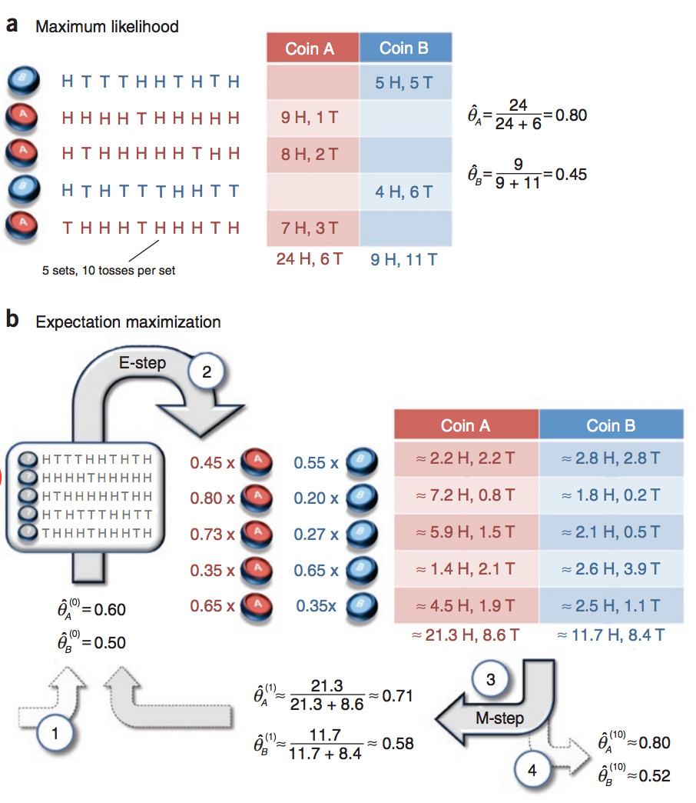
EM算法的引入
引入EM算法有两个常见的例子，一个是三硬币模型，一个是双硬币模型。《统计学习方法》介绍的是三硬币模型，本文引述该模型后，再补充双硬币模型。
三硬币模型
有ABC三枚硬币，单次投掷出现正面的概率分别为π、p、q。利用这三枚硬币进行如下实验：
1、第一次先投掷A，若出现正面则投掷B，否则投掷C
2、记录第二次投掷的硬币出现的结果，正面记作1，反面记作0
独立重复1和2十次，产生如下观测结果：
1 1 0 1 0 0 1 0 1 1
假设只能观测到掷硬币的最终结果，无法观测第一次投掷的是哪一枚硬币，求π、p、q，即三硬币模型的参数。
记模型参数为θ=(π,p,q)，无法观测的第一次投掷的硬币为随机变量z，可以观测的第二次投掷的硬币为随机变量y，则观测数据的似然函数为：
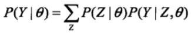
这是个一目了然的式子，两个事件，第一个事件选出那枚看不到的硬币，第二个事件利用这枚硬币进行一次投掷。利用硬币结果只可能是0或1这个特性，可以将这个式子展开为：
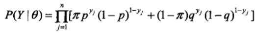
y的观测序列给定了，怎么找出一个模型参数，使得这个序列的概率（似然函数的值）最大呢，也就是求模型参数的极大似然估计：
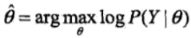
这个问题我认为是个NP问题，一方面，给定模型参数，可以在多项式时间求出似然函数的值，然而模型参数的组合是无穷的，谁也不知道它是否是最优的。
EM算法简单理解
EM算法是求解这个问题的一种迭代算法（我认为并非精确算法，而是近似算法），它有3步：
初始化：选取模型参数的初值：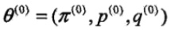，循环如下两步迭代
E步：计算在当前迭代的模型参数下，观测数据y来自硬币B的概率：
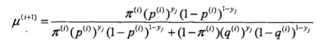
这个式子也是一目了然的，分子代表选定B并进行一次投掷试验，分母代表选定B或C并进行一次投掷试验，两个一除就得到试验结果来自B的概率。
M步：估算下一个迭代的新的模型估算值：

这个也好说，把这n个{试验结果来自B的概率}求和得到期望，平均后，得到B出正面的似然估计，同理有p和q。
重复迭代，直到收敛为止。
这个模型中，观测数据Y和隐数据Z组合在一起称为完全数据，单独的观测数据Y称为不完全数据。在隐数据未知的情况，无法直接估计Y的概率分布。但当模型概率给定时，就可以估计Y的条件概率分布了。
Y的条件概率分布估计出来后有什么用呢？利用Y的条件概率分布，又可以更新模型参数……那问题来了，为什么要这么做，这么做能否找到最优解，原理是什么？
带着这些问题啃书本稍微有趣一些，在探索这个问题之前，有必要规范地描述EM算法，并引入一些正规的符号和定义：
EM算法的标准定义
输入：观测变量数据Y，隐变量数据Z,联合分布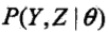，条件分布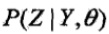；
输出：模型参数θ。
(1) 选择参数的初值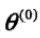,开始迭代；
(2) E步：记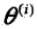为第i次迭代参数θ的估计值，在第i+1次迭代的E步，计算

这里，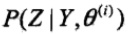是在给定观测数据Y和当前的参数估计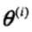下隐变量数据z的条件概率分布；
(3) M步：求使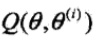极大化的θ，确定第i+1次迭代的参数的估计值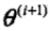
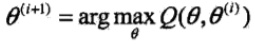
(4）重复第(2)步和第(3)步，直到收敛。
式的函数是EM算法的核心，称为Q函数（Q function)。
定义(Q函数）完全数据的对数似然函数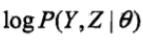关于在给定观测数据Y和当前参数下对未观测数据Z的条件概率分布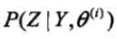的期望称为Q函数，即
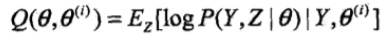
下面关于EM算法作几点说明：
步骤（1)参数的初值可以任意选择，但需注意EM算法对初值是敏感的。
步骤(2)E步求。Q函数式中Z是未观测数据，Y是观测数据。注意，的第1个变元表示要极大化的参数，第2个变元表示参数的当前估计值。每次迭代实际在求Q函数及其极大。
步骤(3)M步求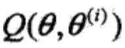的极大化，得到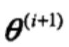，完成一次迭代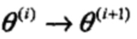。后面将证明每次迭代使似然函数增大或达到局部极值。
步骤(4)给出停止迭代的条件，一般是对较小的正数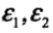,若满足
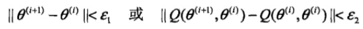
则停止迭代。
EM算法的导出
看完了冗长的标准定义，认识了一点也不Q的Q函数，终于可以了解EM算法是怎么来的了。
寻找模型参数的目标（或称标准）是找到的参数使观测数据的似然函数最大，一般用对数似然函数取代似然函数，这样可以把连乘变为累加，方便优化，也就是极大化
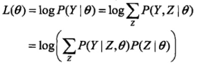
这个式子里面有未知的隐变量Y，无法直接优化。
但是如同在“EM算法简单理解”中看到那样，给定模型参数，就可以估计Y的条件概率（后验概率，已经有Z这个结果，求原因Y的概率）。所以我们就挑一个模型参数的初值，也就是EM算法的第1步。
有了初值，就可以代入似然函数得到一个值，但这个值不一定是最大的，我们想要更大，所以需要调整参数，这也是EM算法为什么要迭代的原因。
事实上，EM算法是通过迭代逐步近似极大化似然函数的。假设在第i次迭代后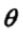的估计值是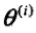。我们希望新估计值能使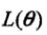增加，即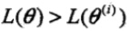,并逐步达到极大值。为此，考虑两者的差：
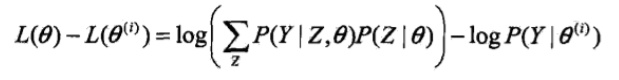
利用Jensen不等式（Jensen inequality)

得到其下界：
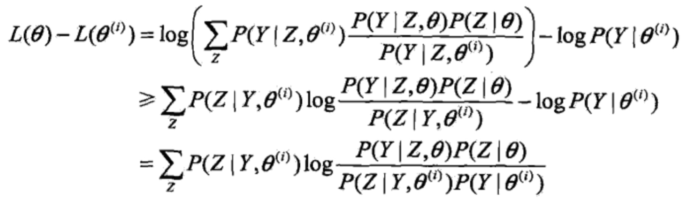
式子有点长，而且用了些技巧，慢慢看。首先第一行的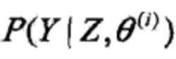是人为加上去的，先乘以这一项再除以这一项得到的依然是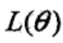，然后第二行就利用了琴生不等式，将log运算符移入求和项中。但为何变成了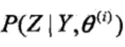呢？我认为这是李航博士的笔误，第一行就应该分子分母同时乘以的。参考普林斯顿大学的讲义《 COS 424- Interacting with Data.pdf》：
COS 424- Interacting with Data.pdf》：
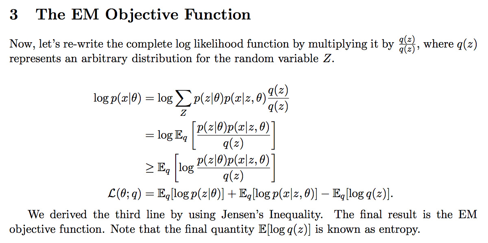
应该乘以Z的概率分布，也就是。
然后第三行的变换其实很简单，将log拆成log乘以对Z求和的形式，再将每一项中的-log跟前一个求和中的每一项中的log合并，log的减法变成除法就得到最终结果了。
好了，言归正传，将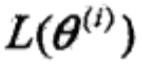移到等号右边去，得到一个函数，取个名字：
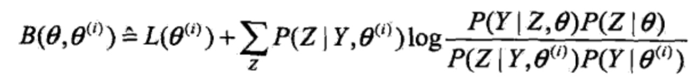
那么就有
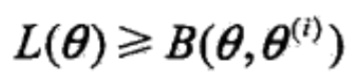
得到了的一个下界，如果将θ = 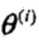，代入，我们会发现，在模型参数一致的情况下，log项中的分子分母都是同一个(Y,Z)的联合分布，所以分子分母相等，后面这个求和项等于0，直接得到：
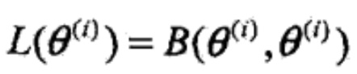
说明等号成立的条件是θ = ，换句话说只要θ 不等于，就一定能让变大一点。换句话说，任何能使 增大的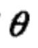，都能使增大（通过优化对数似然函数的下界来间接优化它）。为了尽可能显著地增大，需要选择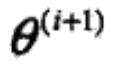使得
增大的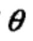，都能使增大（通过优化对数似然函数的下界来间接优化它）。为了尽可能显著地增大，需要选择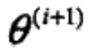使得 达到极大：
达到极大：
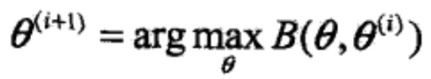
现在来推导的表达式，去掉上式中所有与无关的常数项，有：
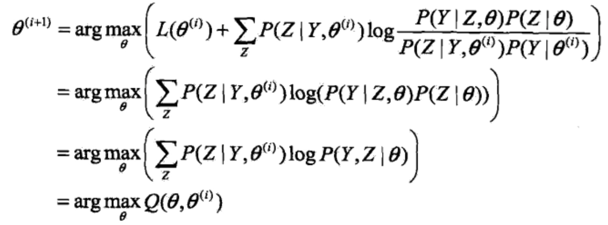
推到最后发现等于最大化Q函数时的参数，也就是M步执行的那样。
EM算法是通过不断求解下界的极大化逼近求解对数似然函数极大化的算法。如图：
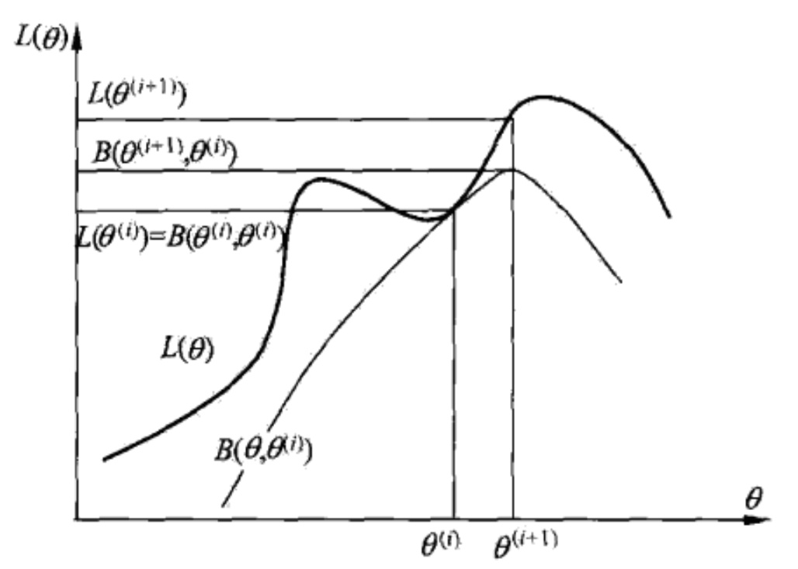
在一个迭代内保证对数似然函数的增加的，迭代结束时无法保证对数似然函数是最大的。也就是说，EM算法不能保证找到全局最优值。严密的证明请接着看下一节。
EM算法的收敛性
对数似然函数单调递增定理 设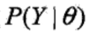为观测数据的似然函数，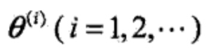为EM算法得到的参数估计序列，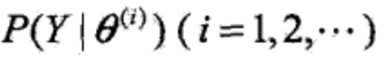为对应的似然函数序列，则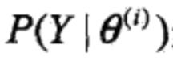是单调递增的，即
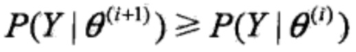
证明参考《统计学习方法》161页。
收敛性定理 设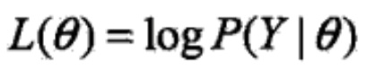为观测数据的对数似然函数，为EM算法得到的参数估计序列， 为对应的对数似然函数序列。
为对应的对数似然函数序列。
（1）如果有上界，则收敛到某一值;
（2）在函数与 满足一定条件下，由EM算法得到的参数估计序列的收敛值是的稳定点。
满足一定条件下，由EM算法得到的参数估计序列的收敛值是的稳定点。
证明依然参考《统计学习方法》162页，事实上，连原著都省略了（2）的证明。
既然EM算法不能保证找到全局最优解，而且初值会影响最终结果，那么实际应用中有什么技巧呢？答案是多选几个初值，择优录取。
原著接下来介绍了EM算法在高斯混合模型中的应用，以及EM算法的推广。这在超出了我目前对理论的需求，所以暂时打住，进入实践环节。
EM算法的简明实现
当然是教学用的简明实现了，这份实现是针对双硬币模型的。
双硬币模型
假设有两枚硬币A、B，以相同的概率随机选择一个硬币，进行如下的抛硬币实验：共做5次实验，每次实验独立的抛十次，结果如图中a所示，例如某次实验产生了H、T、T、T、H、H、T、H、T、H，H代表正面朝上。
假设试验数据记录员可能是实习生，业务不一定熟悉，造成a和b两种情况
a表示实习生记录了详细的试验数据，我们可以观测到试验数据中每次选择的是A还是B
b表示实习生忘了记录每次试验选择的是A还是B，我们无法观测实验数据中选择的硬币是哪个
问在两种情况下分别如何估计两个硬币正面出现的概率？
a情况相信大家都很熟悉，既然能观测到试验数据是哪枚硬币产生的，就可以统计正反面的出现次数，直接利用最大似然估计即可。
b情况就无法直接进行最大似然估计了，只能用EM算法，接下来引用nipunbatra博主的简明EM算法Python实现。
建立数据集
针对这个问题，首先采集数据，用1表示H（正面），0表示T（反面）：
- # 硬币投掷结果观测序列
- observations = np.array([[1, 0, 0, 0, 1, 1, 0, 1, 0, 1],
- [1, 1, 1, 1, 0, 1, 1, 1, 1, 1],
- [1, 0, 1, 1, 1, 1, 1, 0, 1, 1],
- [1, 0, 1, 0, 0, 0, 1, 1, 0, 0],
- [0, 1, 1, 1, 0, 1, 1, 1, 0, 1]])
初始化
选定初值，比如
第一个迭代的E步
抛硬币是一个二项分布，可以用scipy中的binom来计算。对于第一行数据，正反面各有5次，所以：
- coin_A_pmf_observation_1 = stats.binom.pmf(5,10,0.6)
输出
- 0.20065812480000034
类似地，可以计算第一行数据由B生成的概率：
- coin_B_pmf_observation_1 = stats.binom.pmf(5,10,0.5)
输出：
- 0.24609375000000025
将两个概率正规化，得到数据来自硬币A的概率：
- normalized_coin_A_pmf_observation_1 = coin_A_pmf_observation_1/(coin_A_pmf_observation_1+coin_B_pmf_observation_1)
- print "%0.2f" %normalized_coin_A_pmf_observation_1
这个值类似于三硬币模型中的μ，只不过多了一个下标，代表是第几行数据（数据集由5行构成）。同理，可以算出剩下的4行数据的μ。
有了μ，就可以估计数据中AB分别产生正反面的次数了。μ代表数据来自硬币A的概率的估计，将它乘上正面的总数，得到正面来自硬币A的总数，同理有反面，同理有B的正反面。
- # 更新在当前参数下A、B硬币产生的正反面次数
- counts['A']['H'] += weight_A * num_heads
- counts['A']['T'] += weight_A * num_tails
- counts['B']['H'] += weight_B * num_heads
- counts['B']['T'] += weight_B * num_tails
第一个迭代的M步
当前模型参数下，AB分别产生正反面的次数估计出来了，就可以计算新的模型参数了：
- new_theta_A = counts['A']['H'] / (counts['A']['H'] + counts['A']['T'])
- new_theta_B = counts['B']['H'] / (counts['B']['H'] + counts['B']['T'])
对于第一个迭代，新的模型参数分别为：
与论文是一致的，于是就可以整理一下，给出EM算法单个迭代的代码：
- def em_single(priors, observations):
- """
- EM算法单次迭代
- Arguments
- ---------
- priors : [theta_A, theta_B]
- observations : [m X n matrix]
- Returns
- --------
- new_priors: [new_theta_A, new_theta_B]
- :param priors:
- :param observations:
- :return:
- """
- counts = {'A': {'H': 0, 'T': 0}, 'B': {'H': 0, 'T': 0}}
- theta_A = priors[0]
- theta_B = priors[1]
- # E step
- for observation in observations:
- len_observation = len(observation)
- num_heads = observation.sum()
- num_tails = len_observation - num_heads
- contribution_A = stats.binom.pmf(num_heads, len_observation, theta_A)
- contribution_B = stats.binom.pmf(num_heads, len_observation, theta_B) # 两个二项分布
- weight_A = contribution_A / (contribution_A + contribution_B)
- weight_B = contribution_B / (contribution_A + contribution_B)
- # 更新在当前参数下A、B硬币产生的正反面次数
- counts['A']['H'] += weight_A * num_heads
- counts['A']['T'] += weight_A * num_tails
- counts['B']['H'] += weight_B * num_heads
- counts['B']['T'] += weight_B * num_tails
- # M step
- new_theta_A = counts['A']['H'] / (counts['A']['H'] + counts['A']['T'])
- new_theta_B = counts['B']['H'] / (counts['B']['H'] + counts['B']['T'])
- return [new_theta_A, new_theta_B]
EM算法主循环
给定循环的两个终止条件：模型参数变化小于阈值；循环达到最大次数，就可以写出EM算法的主循环了：
- def em(observations, prior, tol=1e-6, iterations=10000):
- """
- EM算法
- :param observations: 观测数据
- :param prior: 模型初值
- :param tol: 迭代结束阈值
- :param iterations: 最大迭代次数
- :return: 局部最优的模型参数
- """
- import math
- iteration = 0
- while iteration < iterations:
- new_prior = em_single(prior, observations)
- delta_change = np.abs(prior[0] - new_prior[0])
- if delta_change < tol:
- break
- else:
- prior = new_prior
- iteration += 1
- return [new_prior, iteration]
调用
给定数据集和初值，就可以调用EM算法了：
- print em(observations, [0.6, 0.5])
得到
- [[0.79678875938310978, 0.51958393567528027], 14]
与论文中的结果是一致的（我们多迭代了4次，毕竟我们不清楚论文作者设置的终止条件）：
我们可以改变初值，试验初值对EM算法的影响。
- em(observations, [0.5,0.6])
得到
- [[0.51958345063012845, 0.79678895444393927], 15]
看来EM算法还是很健壮的
如果把初值设为相等会怎样？
调用
- em(observations, [0.3,0.3])
得到
- [[0.66000000000000003, 0.66000000000000003], 1]
这显然是不是个好主意，再试试很极端的情况：
- em(observations, [0.9999,0.00000001])
得到
- [[0.79678850504581944, 0.51958235686544463], 13]
可见EM算法仍然很聪明。
Reference
《统计学习方法》
 COS 424- Interacting with Data.pdf
COS 424- Interacting with Data.pdf
http://chenrudan.github.io/blog/2015/12/02/emexample.html
代码里写错了吧，
contribution_B = stats.binom.pmf(num_heads, len_observation, theta_B)
应该是contribution_B = stats.binom.pmf(num_tails, len_observation, theta_B)
在“M步：估算下一个迭代的新的模型估算值：”中对π概率的解释出现笔误，应该是通过出现B概率的期望来反映A出现正面的概率。
关于公式L(θ)-L(θ(i))的推导，感觉应当先进行两个log的合并，再使用Jense不等式变换，这样更容易看懂，明白
先转！！
调整初始值，结果差异很大啊，虽然都是0.52和0.8，但是倒了个个呢
因为在b中，名称AB是完全对称的。唯一的不对称就是赋的初值，求出来结果只能说是“两枚硬币小的那枚是0.52，大的那枚是0.8”